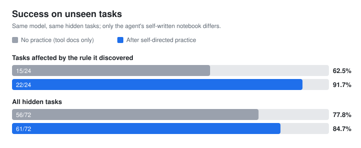
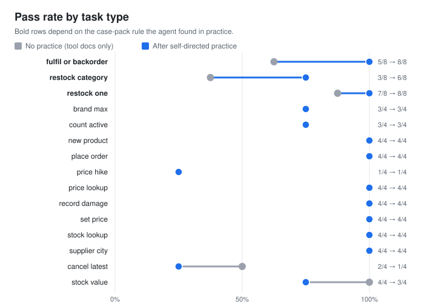

An AI agent that teaches itself to use software it has never seen. It practises in a sandbox,
writes its own notebook of lessons, and gets measurably better on hidden tasks, with no human examples.
Same model, same hidden tasks, two attempts each. The only difference: the notebook it wrote during practice.


The notebook it wrote for itself
Written during 15 practice episodes in shops with different data from the test. Nothing here was given to it.
How it learns
1. Sets its own exercise
From the tool list and what it has tried, it writes a realistic request aimed at what it understands least.
2. Practises like a tester
In a fresh sandbox it states what it expects each change to do, acts, then reads the data back and compares numbers.
3. Writes lessons
It keeps only what the tool docs don't say. Lessons are scored by later evidence and retired if contradicted.
4. Stays honest
Practice never touches test data, a filter blocks record-specific lessons, and prompts never hint at the app's rules.
Replay: before and after, side by side
Every attempt on the hidden test, exactly as it happened. Pick a task to compare the agent without and with its notebook.
Limits, stated plainly
The gain is concentrated where it learned something. Across all 72 attempts the change (77.8% → 84.7%) is not statistically significant on its own.
It never discovered the pagination rules, so tasks that need "every record" or "the most recent" did not improve.
Cost per task went up about 20%: with its notebook the agent checks more before acting.
The affected task group was identified after the first exam; the repeat attempts were run afterwards to confirm it, and they reproduced the gain (8/12 → 11/12).
One small model (), one sandbox app. A second app for a transfer test is the next step.